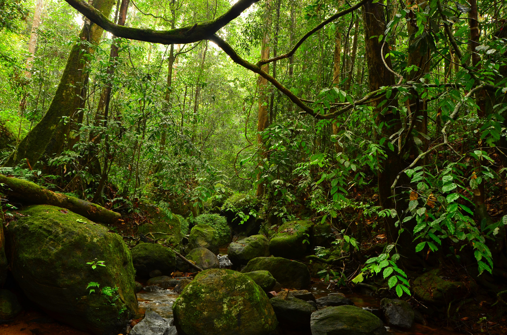
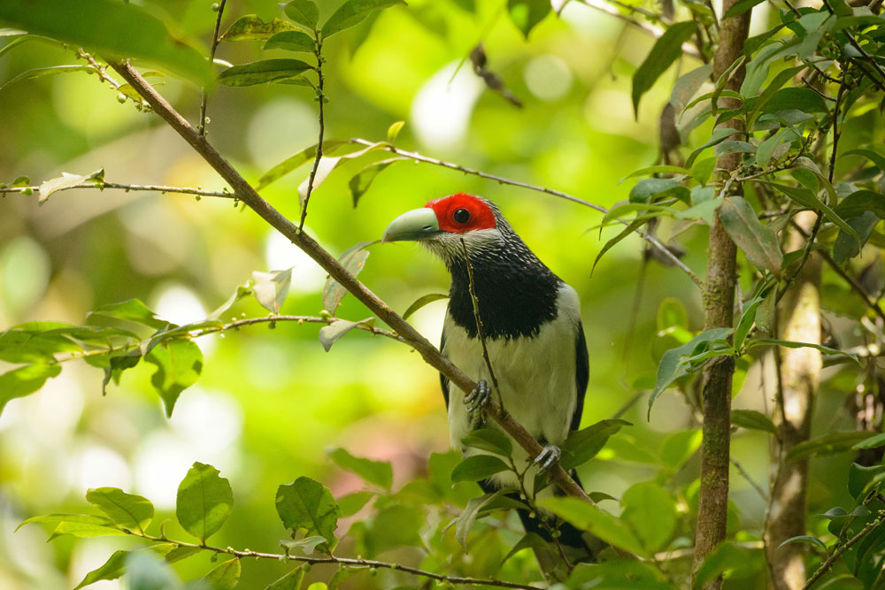
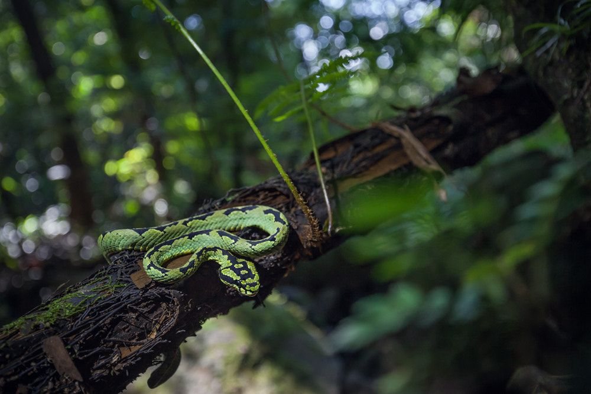
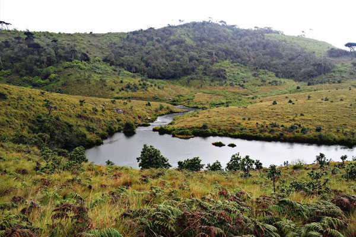
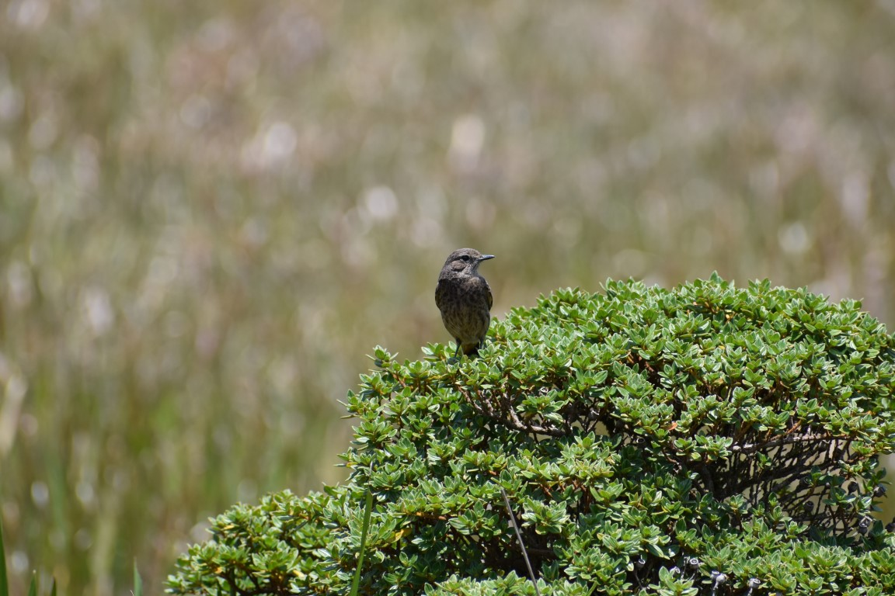
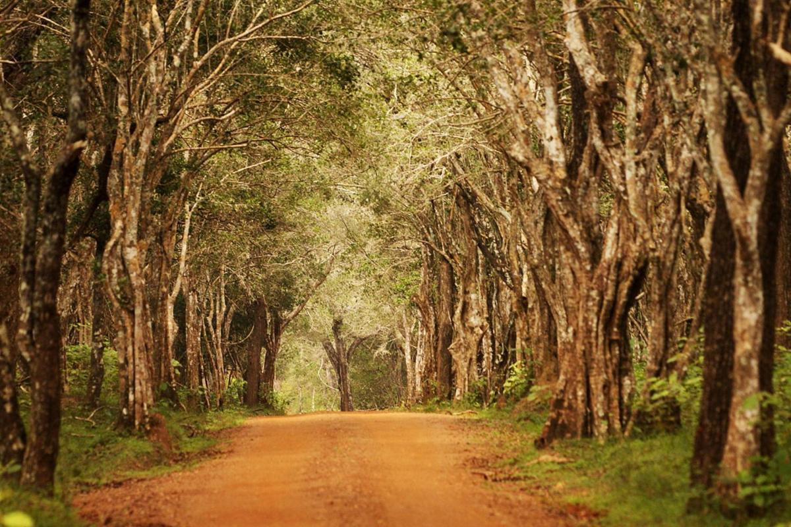
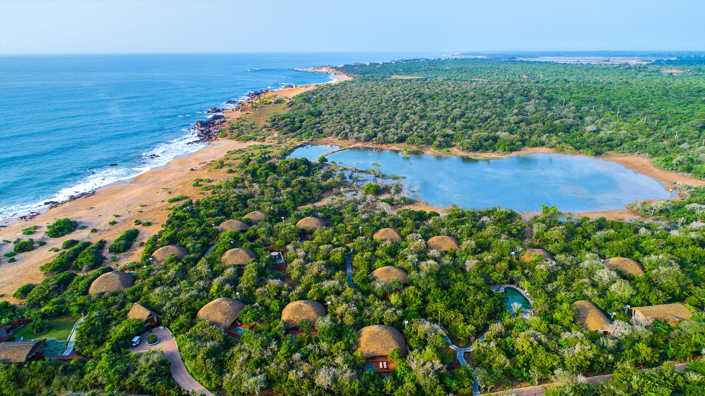
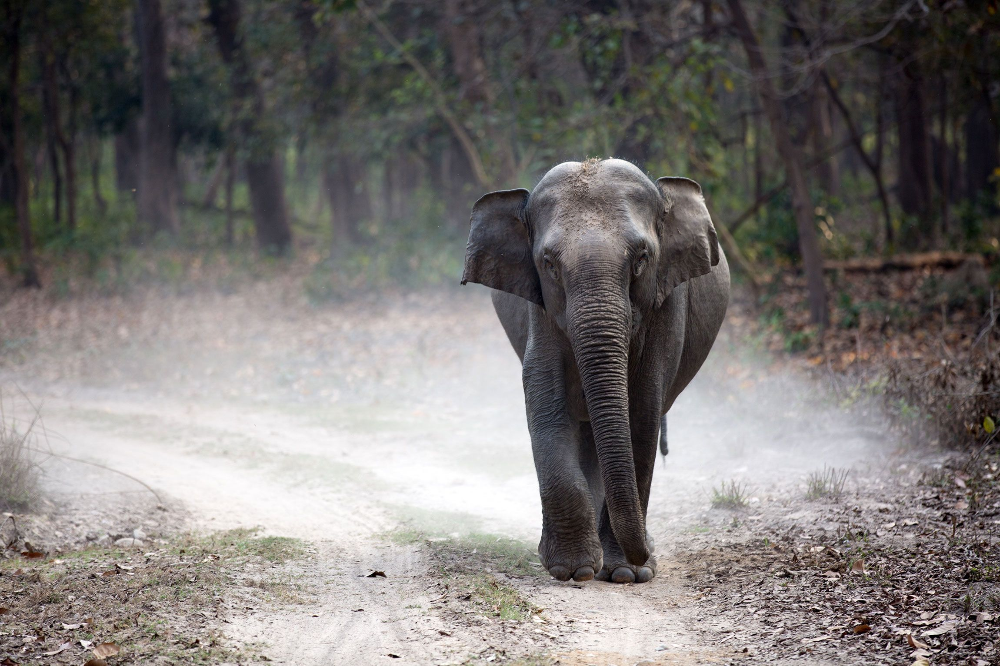

Forests and National Parks
You can see some beautiful images of some beautiful places from three categories.
Rainforests




Rainforests are dense jungles found close to the equator and they are thought to be the oldest ecosystem on Earth. As the name implies, rainforests receive high volumes of at least 80 inches of rainfall every year. The rainforest has some of the largest rivers in the world due to the immense amount of rainfall. These rainforests are known to occupy 6% of the Earth’s total surface area and they act as a habitat for the majority of flora and fauna. They are found scattered all over the world, with the Amazon forest as the largest rainforest known to exist1.
Tropical and temperate rainforests are the 2 types of rainforests that exist on Earth. Both tropical and temperate rainforests have distinct characteristics to tell them apart from each other. For instance, a noticeable feature of temperate rainforest would be its wide range of temperatures that correlates with corresponding seasons, while tropical rainforests are warm and humid throughout the year. Although the ecosystem of tropical rainforests has greater biodiversity, both types of rainforests share many similar traits.
Montane Forests




The Sri Lanka montane rain forests is an ecoregion found above 1,000 m in the central highlands of Sri Lanka. Owing to their rich biodiversity, this region is considered to be a super-hotspot within endemic hotspots of global importance. These forests are cooler than lowland forests and therefore they have ideal conditions for growth of cloud forests. These forests classifications tropical sub montane forest, tropical sub-montane and tropical upper montane. Half of Sri Lanka's endemic flowering plants and 51 percent of the endemic vertebrates are restricted to these forests. More than 34 percent of Sri Lanka's endemic trees, shrubs, and herbs can only be found in this ecoregion. Twisted, stunted trees are a common sight in these forests, together with many varieties of orchids, mosses and ferns. The trees of montane rain forests grow to a height 10–15 meters, shorter than the lowland rain forest trees. These high altitude forests are the catchment area for most of Sri Lanka's major rivers.
National Parks




Of all the National Parks in Sri Lanka, Yala National Park gives the best opportunity to witness Sri Lanka’s broad variety of wildlife: colorful painted stork in troops are seen perched at the shores of lagoon where the crocodiles too have chosen to doze off; lovely fantailed peacocks in their resplendent blues and greens parade about amidst the woods where monkeys hang, leap and chatter; in the bush jungle are the Elephants; crossing the tracks and wandering off into the thorny scrub jungle is the star attraction of the park: the leopard.A total of 32 species of mammals have been recorded. The threatened species include sloth bear (Melursus ursinus), Leopard (Panthera pardus kotiya), elephant (Elephas maximus), water buffalo (Bubalus bubalis), Wild boar (Sus scrofa), spotted deer (Axis axis ceylonessis), sambar (Cervus unicolor) and golden jackal (Canis aureus).